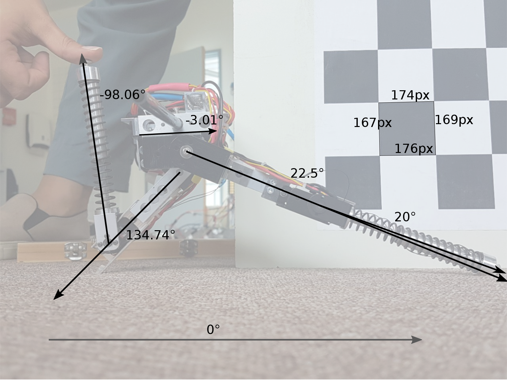

1. Introduction
In order to make the JenaFox robot walk, it is essential to calibrate the angle sensors. These measure the flexion and extension of the hip and the knees of the robot. Parts of the robot can be damaged and might need replacement. Therefore, it is necessary to develop a strategy to calibrate the conversion of the voltages acquired from the potentiometers to the angles used as input for the neural controller. Additionally, the position sensors might simply drift away from the proper calibration. Consequently, an easy-to-use recalibration procedure is developed.
The goal of this calibration strategy is to enable a user to calibrate the robot with as few tools as possible.
2. Calibration Made Easy
One requirement of the calibration is, that is should be really easy to execute it. As mentioned in the introduction, the position sensors might drift and recalibration is required frequently. In our approach, we use two robot configurations that are easy to reproduce. As the latter reminds one a bit of a yoga course, we call our approach a yoga-based calibration. The configurations required for the calibration only use the extreme angles of each joint and consequently, no angle measurement device is required during recalibration. The operator performing the (re-)calibration, moves the robot to the required poses and gives feedback to the system by pressing one of the ground contact sensors as soon as the required pose is reached. As the designed robot configurations only expose one of the two sensors to the operator, we can directly detect which configuration was set by the pressed ground contact switch.
Figure 1: Yoga position of the Fox robot.
Figure 1 shows one of the two yoga poses of the robot. In this configuration, one knee is completely flexed while the other knee is completely extended. Additionally, both hips need to be as far from each other as possible. This configuration is achieved by pushing the hips to the limits of the joints.
The calibration consists of two steps:
1. Position the JenaFox robot in a yoga-position with one foot in front and the other in the back. The hips need to be as far from each other as possible and the forward knee needs to be flexed completely. In order to calibrate for this hip and knee position, one simply has to press the ground contact switch of the flexed knee.
Figure 2: Yoga pose of the JenaFox robot with the left knee extended, and right knee flexed (where the trigger is pushed).
2. In the second step, one simply repeats the first step but with opposite sides. This means that you change legs: the one that was in front goes in the back and the one in the back goes in the front. The knee in front should be extended and the knee in the back should be flexed. Then again press the ground contact sensor from the flexed knee.
Figure 3: Yoga pose of the JenaFox robot, right knee extended, left knee flexed (where the trigger is pushed)
Figure 2 and 3 shows how the two sides are measured. It is arbitrary which side is measured first and which is measured second as we detect the order by ground contact sensors pressed. Once both steps are conducted, the voltages will be calibrated to the angles of the hips and knees in Matlab.
3. Realization of our Calibration Approach
We chose the yoga position as it comes with a lot of properties that are required for the calibration process. Firstly, this pose as seen in Figure 1, is very easy to replicate and it includes the extreme angles for both hips and knees.
In order to calibrate the angles to the voltages, at least two pairs of angles-voltages for each leg are required. The voltages of the extreme angles and the appropriate angles.
3.1 Obtaining the Extreme Angles of the Joints Optically
In order to measure the angles, we used images of the robot configurations for an optical angle measuring. We additionally added a chessboard to the scene to rectify the images accordingly.

Figure 4: (left) Angles measured on the photo of the robot (left knee extended)
(right) Angles measured on the photo of the robot (right knee extended)
Figure 4 shows the measured angles on the image of the JenaFox robot in the yoga pose for both sides. All angles are absolute, that is, relative to the x-axis of the image. Note that the optical approach only provides good results for the angles if the camera sensor plane and the robot's xy-plane are parallel, else the angles get distorted due to the projective transformation. As this is hard to guarantee in general, we decided to use a chessboard pattern to rectify the images as a post-processing step. Then, only the chessboard must be parallel to the robot's xy-plane, which is easier to align in the real world. Under the assumption that this is the case, we rectify the image such that the squares of the chessboard appear as squares in the image and at the same time we remove the angle distortion of the joint angles in the image. Figure 5 shows the rectification of an exemplary image. We use a small python script and the OpenCV library for the rectification. As OpenCV already provides an easy-to-use chessboard detector (as this widely and intensively used for camera calibration) the implementation is straightforward. We detect the corners of some of the squares and warp the image in a way that the quadrilaterals appears as actual axis-aligned squares in the resulting image. This is performed by computing the homography from the detected corners to the desired corners. For details, please view the self-explaining python script in our code repository.
Figure 5: Original and rectified image of one yoga-pose. |
(detected chessboard corners are marked with a red dot) |
Using these measured angles, one can calculate the extreme angles of the knees and hips.
| Right hip | Left Hip | Right knee | Left knee | |
| Flexor extreme angle | -64.50 | -71.55 | -127.20 | -128.28 |
| Extensor extreme angle | 44.15 | 42.25 | -0.2 | -2.5 |
Table 1: Extreme angles for hips and knees
Table 1 shows the derived extreme angles that are used to calibrate the voltage-angles conversion.
3.2 Fitting a Linear Function to the Measurements using Linear Interpolation
Knowing that the relation between angles and voltages is proportional, we can fit each angle $f_i(V) = \varphi_i$ with the appropriate voltages $V_i$ by calculating a simple linear function. From this function, it is possible to derive the gain \(m_i\) and the offset \(\varphi_{0i}\) for the relation for each joint.
$f_i(V) = m_i V+\varphi_{0i}$
First of all, the gain of the function is calculated using the following equation:
$m_i = \frac{\varphi_{1i}-\varphi_{2i}}{V_{1i}-V_{2i}} $
Then later the offset \(\varphi_{i0}\) is found by :
$\varphi_{0i} = \varphi_1 - m_i*V_1$
This procedure is done for all of the four joints as seen in Figure 6.
Figure 6: Voltage-Angle relation graphs for each motor joint
As the calibration of the voltage-to-angels now is done, the angles can be used as input for the neural controller of the JenaFox robot.
4. Integration
During the calibration, we have a trivial simulink model that simply stores all the input data to the workspace. This includes the voltages for the angle sensors and the ground contact voltages. This data can then be stored to a '.mat' file to reuse it later. We added another script that takes the recorded data from the workspace, extracts the required training data based on the state of the ground contacts switches and computes the gains and offsets for the linear interpolation. The calibration script is automatically called in the init script of the model. Afterwards, the variable calibration_data is available which can be used in simulink for the conversion from voltages to angles.
Figure 7: The block in Simulink for conversion of the voltages to angles
After having calibrated the relation between the voltages and angles, a MatLab function called "forrest" is introduced to do the conversion in real-time for the controller. Figure 7 shows the basic interface of this conversion block. The input are the potentiometer voltages and the calibration_data from the workspace which is computed in the model's init script. Based thereon, the block performs the linear interpolation for the angles and normalizes the ground contact signals to [0, 1].
Figure 8: The two blocks "forrest" and "gump" used for controlling the JenaFox robot
The "forrest" block outputs the angles and the ground contact vector which are sent to the neural controller block "gump". The voltages that determine the motors are later outputted from this block. Figure 8 shows the interconnection of the voltage to angle conversion and the controller block.
5. Discussion (Outtakes of the Calibration Design)
To find the optimal calibration strategy, we followed a design thinking approach.
This approach required several iterations and we came up with some funny approaches on how we could calibrate the JenaFox robot.
For our first approach, we used the angle measurement tool that was provided by the professor. This approach turned out to be quite challenging, as the measurement was more a measure by eyesight. It was particularly difficult to align the angle measurement tool with according parts of the robot.
The idea of using the ground contact sensors for registering angles came early in the process. However, we first thought of clicking one time for each angle with a certain order, making it unintuitive and confusing.
Another approach required rectangular cubes, where the robot legs were aligned to the edges of the cubes. This approach was discarded due to lack of accuracy.
We finally decided on the yoga-based approach using a camera for the angle measurement, as it is intuitive, easy to reproduce and the tools required are more or less always available.
Code on GitLab
https://gitlab.lrz.de/crzy_optimizers/forrest_gump